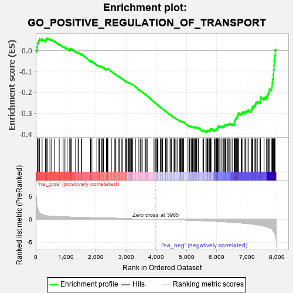
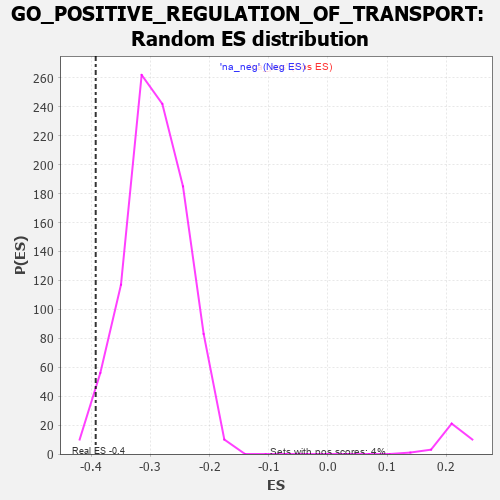

| | | Dataset | 7d |
| Phenotype | NoPhenotypeAvailable |
| Upregulated in class | na_neg |
| GeneSet | GO_POSITIVE_REGULATION_OF_TRANSPORT |
| Enrichment Score (ES) | -0.39242294 |
| Normalized Enrichment Score (NES) | -1.3485745 |
| Nominal p-value | 0.017616581 |
| FDR q-value | 0.40490547 |
| FWER p-Value | 1.0 |
Table: GSEA Results Summary

Fig 1: Enrichment plot: GO_POSITIVE_REGULATION_OF_TRANSPORT
Profile of the Running ES Score & Positions of GeneSet Members on the Rank Ordered List
| PROBE | GENE SYMBOL | GENE_TITLE | RANK IN GENE LIST | RANK METRIC SCORE | RUNNING ES | CORE ENRICHMENT | | 1 | TGFB3 | | | 49 | 2.654 | 0.0172 | No |
| 2 | RAC2 | | | 60 | 2.442 | 0.0375 | No |
| 3 | IRS1 | | | 98 | 1.659 | 0.0475 | No |
| 4 | ADCY8 | | | 124 | 1.418 | 0.0568 | No |
| 5 | RHOU | | | 210 | 1.031 | 0.0550 | No |
| 6 | CNST | | | 317 | 0.792 | 0.0484 | No |
| 7 | DLL1 | | | 337 | 0.760 | 0.0527 | No |
| 8 | GSK3A | | | 351 | 0.745 | 0.0576 | No |
| 9 | BAX | | | 387 | 0.711 | 0.0594 | No |
| 10 | LRP1 | | | 470 | 0.648 | 0.0546 | No |
| 11 | HTRA2 | | | 527 | 0.621 | 0.0528 | No |
| 12 | GLMN | | | 632 | 0.583 | 0.0446 | No |
| 13 | CPSF6 | | | 778 | 0.538 | 0.0307 | No |
| 14 | WLS | | | 907 | 0.505 | 0.0187 | No |
| 15 | ZPR1 | | | 967 | 0.491 | 0.0155 | No |
| 16 | AKT1 | | | 1040 | 0.476 | 0.0104 | No |
| 17 | SRC | | | 1128 | 0.459 | 0.0033 | No |
| 18 | KMT2A | | | 1130 | 0.458 | 0.0072 | No |
| 19 | UBL5 | | | 1162 | 0.452 | 0.0073 | No |
| 20 | TFDP1 | | | 1180 | 0.450 | 0.0091 | No |
| 21 | NRDE2 | | | 1320 | 0.425 | -0.0051 | No |
| 22 | EXOC1 | | | 1403 | 0.409 | -0.0120 | No |
| 23 | P2RY1 | | | 1416 | 0.407 | -0.0099 | No |
| 24 | INHBB | | | 1514 | 0.388 | -0.0190 | No |
| 25 | XPO4 | | | 1518 | 0.388 | -0.0159 | No |
| 26 | ABR | | | 1812 | 0.335 | -0.0507 | No |
| 27 | FMR1 | | | 1816 | 0.334 | -0.0481 | No |
| 28 | SMAD4 | | | 1860 | 0.326 | -0.0507 | No |
| 29 | DMAP1 | | | 2025 | 0.301 | -0.0692 | No |
| 30 | KCNC2 | | | 2075 | 0.295 | -0.0729 | No |
| 31 | RBM27 | | | 2111 | 0.289 | -0.0748 | No |
| 32 | SNF8 | | | 2119 | 0.288 | -0.0732 | No |
| 33 | SYK | | | 2186 | 0.278 | -0.0792 | No |
| 34 | C2CD5 | | | 2204 | 0.276 | -0.0789 | No |
| 35 | CREB1 | | | 2243 | 0.269 | -0.0814 | No |
| 36 | ANO6 | | | 2339 | 0.255 | -0.0914 | No |
| 37 | BCAS3 | | | 2352 | 0.253 | -0.0907 | No |
| 38 | MIF | | | 2357 | 0.252 | -0.0890 | No |
| 39 | PPID | | | 2376 | 0.249 | -0.0891 | No |
| 40 | NCBP2 | | | 2383 | 0.248 | -0.0877 | No |
| 41 | SAE1 | | | 2390 | 0.247 | -0.0863 | No |
| 42 | HUWE1 | | | 2506 | 0.225 | -0.0991 | No |
| 43 | BAG3 | | | 2620 | 0.209 | -0.1118 | No |
| 44 | VPS4A | | | 2654 | 0.205 | -0.1142 | No |
| 45 | PPIA | | | 2754 | 0.190 | -0.1252 | No |
| 46 | RIOK2 | | | 2775 | 0.187 | -0.1262 | No |
| 47 | EEPD1 | | | 2835 | 0.178 | -0.1322 | No |
| 48 | PDCD5 | | | 2885 | 0.169 | -0.1370 | No |
| 49 | ANO1 | | | 2982 | 0.152 | -0.1480 | No |
| 50 | AZIN2 | | | 2993 | 0.150 | -0.1480 | No |
| 51 | COX17 | | | 3019 | 0.147 | -0.1499 | No |
| 52 | FEZ1 | | | 3055 | 0.142 | -0.1531 | No |
| 53 | MAP2 | | | 3074 | 0.140 | -0.1542 | No |
| 54 | CHP1 | | | 3089 | 0.138 | -0.1548 | No |
| 55 | AIMP1 | | | 3105 | 0.136 | -0.1555 | No |
| 56 | MTMR2 | | | 3126 | 0.133 | -0.1569 | No |
| 57 | EDEM2 | | | 3145 | 0.131 | -0.1581 | No |
| 58 | PSMD9 | | | 3179 | 0.125 | -0.1612 | No |
| 59 | RBM22 | | | 3182 | 0.125 | -0.1603 | No |
| 60 | AP1G1 | | | 3210 | 0.121 | -0.1627 | No |
| 61 | SMAD3 | | | 3303 | 0.105 | -0.1737 | No |
| 62 | KCTD7 | | | 3417 | 0.088 | -0.1874 | No |
| 63 | HGS | | | 3476 | 0.080 | -0.1942 | No |
| 64 | CDK5 | | | 3480 | 0.080 | -0.1938 | No |
| 65 | UBR5 | | | 3518 | 0.074 | -0.1980 | No |
| 66 | HDAC3 | | | 3528 | 0.072 | -0.1985 | No |
| 67 | CBL | | | 3621 | 0.056 | -0.2098 | No |
| 68 | ACSL4 | | | 3632 | 0.055 | -0.2106 | No |
| 69 | FIS1 | | | 3654 | 0.051 | -0.2129 | No |
| 70 | DHX9 | | | 3693 | 0.044 | -0.2174 | No |
| 71 | IFIH1 | | | 3919 | 0.006 | -0.2463 | No |
| 72 | PPM1A | | | 3953 | 0.002 | -0.2505 | No |
| 73 | STX18 | | | 3962 | 0.000 | -0.2515 | No |
| 74 | VPS35 | | | 3989 | -0.006 | -0.2548 | No |
| 75 | DDX58 | | | 3998 | -0.007 | -0.2558 | No |
| 76 | TOR1A | | | 4030 | -0.013 | -0.2597 | No |
| 77 | ATG5 | | | 4051 | -0.016 | -0.2621 | No |
| 78 | ABL1 | | | 4125 | -0.027 | -0.2712 | No |
| 79 | WNK3 | | | 4153 | -0.034 | -0.2744 | No |
| 80 | PDX1 | | | 4179 | -0.038 | -0.2773 | No |
| 81 | AP2B1 | | | 4185 | -0.039 | -0.2776 | No |
| 82 | VPS11 | | | 4202 | -0.041 | -0.2793 | No |
| 83 | RAN | | | 4299 | -0.059 | -0.2911 | No |
| 84 | SAR1A | | | 4304 | -0.060 | -0.2911 | No |
| 85 | STAC | | | 4327 | -0.064 | -0.2934 | No |
| 86 | ADRB2 | | | 4352 | -0.068 | -0.2958 | No |
| 87 | PRR5L | | | 4418 | -0.080 | -0.3035 | No |
| 88 | LRRK2 | | | 4467 | -0.087 | -0.3089 | No |
| 89 | HIP1 | | | 4485 | -0.092 | -0.3103 | No |
| 90 | MEF2A | | | 4499 | -0.095 | -0.3111 | No |
| 91 | VPS28 | | | 4582 | -0.114 | -0.3207 | No |
| 92 | SYT4 | | | 4590 | -0.116 | -0.3205 | No |
| 93 | RAB21 | | | 4620 | -0.122 | -0.3232 | No |
| 94 | MYLK | | | 4651 | -0.128 | -0.3259 | No |
| 95 | ARF6 | | | 4704 | -0.140 | -0.3314 | No |
| 96 | PLCG1 | | | 4770 | -0.151 | -0.3384 | No |
| 97 | CD151 | | | 4791 | -0.156 | -0.3396 | No |
| 98 | TERT | | | 4801 | -0.157 | -0.3393 | No |
| 99 | P2RX4 | | | 4813 | -0.161 | -0.3393 | No |
| 100 | FBXW7 | | | 4816 | -0.161 | -0.3382 | No |
| 101 | SGK1 | | | 4852 | -0.168 | -0.3412 | No |
| 102 | DLG1 | | | 4860 | -0.169 | -0.3406 | No |
| 103 | CLU | | | 4889 | -0.174 | -0.3426 | No |
| 104 | VAMP8 | | | 4905 | -0.179 | -0.3430 | No |
| 105 | PDPK1 | | | 5043 | -0.207 | -0.3588 | No |
| 106 | DRD2 | | | 5088 | -0.221 | -0.3625 | No |
| 107 | ITSN1 | | | 5094 | -0.222 | -0.3612 | No |
| 108 | DOC2B | | | 5113 | -0.229 | -0.3614 | No |
| 109 | LMAN2 | | | 5155 | -0.238 | -0.3646 | No |
| 110 | SMO | | | 5195 | -0.247 | -0.3674 | No |
| 111 | IPO5 | | | 5207 | -0.248 | -0.3667 | No |
| 112 | TMF1 | | | 5225 | -0.251 | -0.3666 | No |
| 113 | CDK1 | | | 5264 | -0.262 | -0.3692 | No |
| 114 | PICK1 | | | 5265 | -0.263 | -0.3669 | No |
| 115 | MAGI2 | | | 5295 | -0.269 | -0.3682 | No |
| 116 | RAB7A | | | 5302 | -0.271 | -0.3666 | No |
| 117 | NPY2R | | | 5331 | -0.281 | -0.3677 | No |
| 118 | GRIN1 | | | 5381 | -0.291 | -0.3714 | No |
| 119 | FZD5 | | | 5386 | -0.292 | -0.3694 | No |
| 120 | EDEM1 | | | 5541 | -0.331 | -0.3862 | No |
| 121 | FGFR1 | | | 5543 | -0.332 | -0.3834 | No |
| 122 | EHD1 | | | 5560 | -0.336 | -0.3825 | No |
| 123 | G6PD | | | 5638 | -0.358 | -0.3893 | Yes |
| 124 | WNK1 | | | 5650 | -0.362 | -0.3875 | Yes |
| 125 | CASP8 | | | 5678 | -0.369 | -0.3877 | Yes |
| 126 | CD63 | | | 5680 | -0.370 | -0.3845 | Yes |
| 127 | MTCL1 | | | 5697 | -0.374 | -0.3833 | Yes |
| 128 | CALCR | | | 5730 | -0.386 | -0.3840 | Yes |
| 129 | TLR2 | | | 5761 | -0.395 | -0.3843 | Yes |
| 130 | VAMP7 | | | 5777 | -0.399 | -0.3827 | Yes |
| 131 | ABCG1 | | | 5778 | -0.399 | -0.3792 | Yes |
| 132 | TRPC6 | | | 5784 | -0.401 | -0.3763 | Yes |
| 133 | LAMP1 | | | 5796 | -0.404 | -0.3741 | Yes |
| 134 | SNX4 | | | 5834 | -0.415 | -0.3752 | Yes |
| 135 | KCNQ1 | | | 5918 | -0.441 | -0.3820 | Yes |
| 136 | STK11 | | | 5922 | -0.443 | -0.3785 | Yes |
| 137 | ACTN2 | | | 5960 | -0.458 | -0.3792 | Yes |
| 138 | STAC2 | | | 5987 | -0.466 | -0.3784 | Yes |
| 139 | SYT9 | | | 5992 | -0.469 | -0.3747 | Yes |
| 140 | XBP1 | | | 6011 | -0.475 | -0.3728 | Yes |
| 141 | TRPC3 | | | 6035 | -0.483 | -0.3715 | Yes |
| 142 | RAC1 | | | 6036 | -0.484 | -0.3672 | Yes |
| 143 | PPT1 | | | 6038 | -0.485 | -0.3631 | Yes |
| 144 | CALR | | | 6077 | -0.499 | -0.3636 | Yes |
| 145 | ATG13 | | | 6110 | -0.508 | -0.3632 | Yes |
| 146 | STIM1 | | | 6169 | -0.528 | -0.3660 | Yes |
| 147 | INSR | | | 6204 | -0.538 | -0.3656 | Yes |
| 148 | RGN | | | 6233 | -0.547 | -0.3643 | Yes |
| 149 | CDC42 | | | 6236 | -0.548 | -0.3597 | Yes |
| 150 | STK39 | | | 6274 | -0.563 | -0.3595 | Yes |
| 151 | FLOT1 | | | 6276 | -0.564 | -0.3546 | Yes |
| 152 | SYTL4 | | | 6304 | -0.578 | -0.3530 | Yes |
| 153 | GALR2 | | | 6355 | -0.599 | -0.3541 | Yes |
| 154 | TRPM4 | | | 6390 | -0.612 | -0.3531 | Yes |
| 155 | MBL2 | | | 6411 | -0.623 | -0.3501 | Yes |
| 156 | LIPG | | | 6468 | -0.648 | -0.3516 | Yes |
| 157 | VAMP2 | | | 6525 | -0.672 | -0.3529 | Yes |
| 158 | P2RX5 | | | 6576 | -0.699 | -0.3531 | Yes |
| 159 | CLN3 | | | 6580 | -0.699 | -0.3473 | Yes |
| 160 | ARF1 | | | 6583 | -0.701 | -0.3413 | Yes |
| 161 | TPR | | | 6597 | -0.709 | -0.3367 | Yes |
| 162 | TUB | | | 6611 | -0.718 | -0.3321 | Yes |
| 163 | SCYL2 | | | 6621 | -0.724 | -0.3268 | Yes |
| 164 | ACSL5 | | | 6643 | -0.737 | -0.3230 | Yes |
| 165 | RAB5A | | | 6655 | -0.741 | -0.3178 | Yes |
| 166 | MPC2 | | | 6683 | -0.753 | -0.3146 | Yes |
| 167 | PAK1 | | | 6691 | -0.757 | -0.3088 | Yes |
| 168 | EGFR | | | 6708 | -0.765 | -0.3041 | Yes |
| 169 | GSK3B | | | 6719 | -0.768 | -0.2986 | Yes |
| 170 | ADAM9 | | | 6808 | -0.819 | -0.3027 | Yes |
| 171 | LYAR | | | 6828 | -0.830 | -0.2978 | Yes |
| 172 | AHI1 | | | 6860 | -0.848 | -0.2942 | Yes |
| 173 | MIB1 | | | 6932 | -0.890 | -0.2955 | Yes |
| 174 | DNM1L | | | 6963 | -0.913 | -0.2913 | Yes |
| 175 | CCR2 | | | 7003 | -0.939 | -0.2880 | Yes |
| 176 | MYH10 | | | 7048 | -0.966 | -0.2851 | Yes |
| 177 | CFTR | | | 7143 | -1.030 | -0.2881 | Yes |
| 178 | SYT1 | | | 7148 | -1.033 | -0.2794 | Yes |
| 179 | PTPRJ | | | 7180 | -1.054 | -0.2741 | Yes |
| 180 | TSPO | | | 7194 | -1.065 | -0.2663 | Yes |
| 181 | ABCA1 | | | 7243 | -1.113 | -0.2626 | Yes |
| 182 | CIB1 | | | 7280 | -1.152 | -0.2571 | Yes |
| 183 | ANK2 | | | 7298 | -1.170 | -0.2489 | Yes |
| 184 | GPD1L | | | 7343 | -1.215 | -0.2438 | Yes |
| 185 | KMO | | | 7432 | -1.308 | -0.2435 | Yes |
| 186 | MYRIP | | | 7443 | -1.323 | -0.2331 | Yes |
| 187 | KCNB1 | | | 7444 | -1.327 | -0.2213 | Yes |
| 188 | CALM1 | | | 7567 | -1.499 | -0.2238 | Yes |
| 189 | MCU | | | 7644 | -1.637 | -0.2191 | Yes |
| 190 | ANK3 | | | 7690 | -1.740 | -0.2094 | Yes |
| 191 | BOK | | | 7715 | -1.817 | -0.1964 | Yes |
| 192 | RNF31 | | | 7744 | -1.895 | -0.1833 | Yes |
| 193 | PKD2 | | | 7822 | -2.167 | -0.1740 | Yes |
| 194 | KCNC1 | | | 7835 | -2.249 | -0.1556 | Yes |
| 195 | TCAF2 | | | 7854 | -2.428 | -0.1364 | Yes |
| 196 | CALM3 | | | 7869 | -2.525 | -0.1158 | Yes |
| 197 | FYN | | | 7881 | -2.622 | -0.0940 | Yes |
| 198 | CAV3 | | | 7896 | -2.739 | -0.0716 | Yes |
| 199 | TCAF1 | | | 7901 | -2.803 | -0.0473 | Yes |
| 200 | NPSR1 | | | 7913 | -2.947 | -0.0226 | Yes |
| 201 | ARRB1 | | | 7935 | -3.377 | 0.0046 | Yes |
Table: GSEA details [plain text format]

Fig 2: GO_POSITIVE_REGULATION_OF_TRANSPORT: Random ES distribution
Gene set null distribution of ES for GO_POSITIVE_REGULATION_OF_TRANSPORT